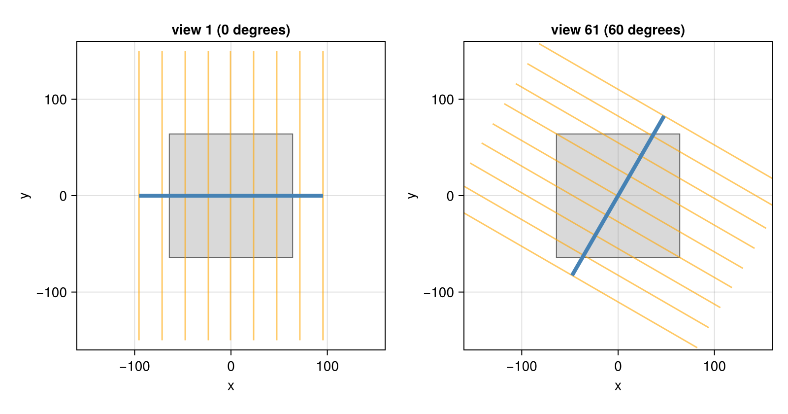
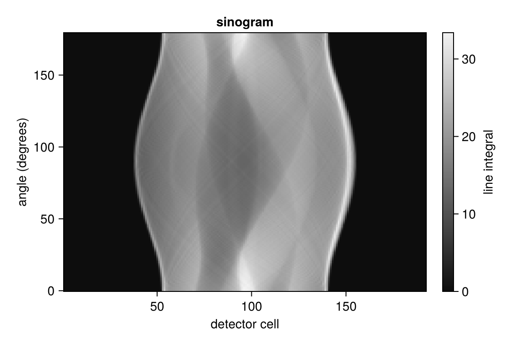
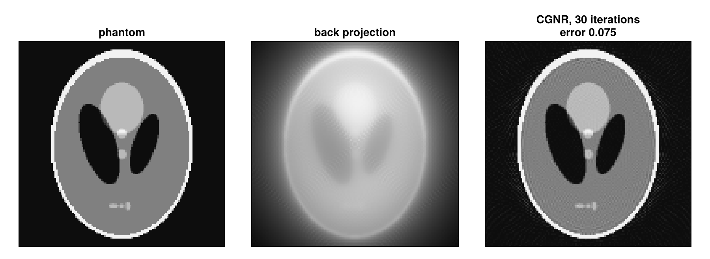

Parallel Beam in 2D
The simplest CT scan: parallel rays through a slice of the object, from many directions. This tutorial simulates such a scan of the Shepp-Logan phantom, looks at its data, the sinogram, and reconstructs the slice, first by plain back projection and then iteratively.
using CTOperators, ImagePhantoms, RegularizedLeastSquares, LinearOperatorCollection, CairoMakie
using ImageGeoms: axisdepth_figure (generic function with 1 method)The object
A slice of 128 × 128 pixels of 1 mm. A 2D ImageGeom is a slice at z = 0, so the rays must run in this plane: below, a single detector row (nv = 1) at the height of the slice. The phantom, sampled with 2 × 2 points per pixel, is the ground truth.
n = 128
image = ImageGeom(; dims=(n, n), deltas=(1.0, 1.0))
x_true = Float32.(phantom(axis(image, 1), axis(image, 2), shepp_logan(SheppLoganToft(); fovs=(n, n)), 2));The scan
A detector row of 192 cells of 1 mm, wide enough for the diagonal of the slice, measures the line integrals of parallel rays. Detector and rays rotate about the center; since a ray and the ray in the opposite direction measure the same line integral, half a turn suffices: 180 views, one per degree. nv = 1 makes it a single detector row.
angles = range(0, pi, 181)[1:180]
geometry = parallel_beam(; angles, nu=192, nv=1, du=1.0)ParallelBeam{Float64}: 180 views, detector of 192 x 1 cells, stored in ArraySeen from above, for the first view and for a view at 60 degrees: the rays (orange, every 24th cell) all have the same direction and cross the slice (gray) to the detector (blue). Parallel rays are infinite lines; the drawn detector shows where each ray is recorded, the ray does not end there.

The data: a sinogram
Joseph's method computes the line integrals: op * x projects the image x into the data of all views, a 192 × 1 × 180 array.
op = JosephProjector(image, geometry)
y = op * x_true
size(y)(192, 1, 180)Stacked view by view, the detector rows form the sinogram. Every point of the object traces a sine curve in it: the position on the detector at which the point appears moves back and forth as the scanner turns; the farther the point is from the center, the larger the swing. The brightest parts, at the outer edges of the sinogram, come from rays that graze the skull of the phantom and run a long way inside it.

Reconstruction
The back projection adjoint(op) * y smears every measured value back along its ray. It is not the inverse: a single point of the object comes back as a star of lines through it, whose sum falls off with the distance from the point. The result is a blurred version of the object, in which the low spatial frequencies are too strong.
x_bp = adjoint(op) * y;An iterative method finds the image whose projections match the data, in the least-squares sense min ‖A x − y‖², with the projector op as A. CGNR from RegularizedLeastSquares.jl needs nothing but forward and back projections, together in the normal operator adjoint(op) * op that normalOperator of LinearOperatorCollection.jl provides. The solver works on vectors, hence vec(y) and the reshape of the result:
solver = createLinearSolver(CGNR, op; AHA=normalOperator(op), iterations=30)
x_cg = reshape(solve!(solver, vec(y)), n, n);The back projection (in its own gray scale) and the CGNR reconstruction, with its relative error ‖x − x_true‖ / ‖x_true‖ to the phantom. The gray scale runs from 0 to 0.4 to show the soft tissue; the skull, at 1, is saturated.

The data here is ideal: no noise and enough views. Sparse Views and Limited Angles takes away views, and Fan Beam with a Curved Detector replaces the parallel rays by those of a clinical scanner.
This page was generated using Literate.jl.